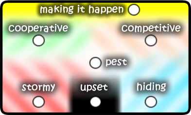

flashTargets Learner is a software application that provides a framework for a series of learning conversations.
INSTRUCTIONS
Application Controls

There are five main tools in flashTargets learner: the chart; narrative; stance; file; and the target.
Chart

The chart displays all conversations for a learner's target, and is the main control for viewing and editing. The horizontal axis is the chronological order and the vertical axis is the learners "target" assessment of their progress. Each conversation in the chart is displayed using a radar component, and are connected through a line graph. There is a text area above the chart to type in the target text.
To edit or view a conversation on the chart, select the radar. Once a radar is selected, a number of things happen: the date that the conversation was recorded is displayed immediately to the right; the narrative tool creates a tab for the narrative (with the same date displayed for that conversation in a tab); and the stances tool display the stances taken for that conversation.
If only one conversation is selected in the chart tool, a component to edit the target value is visible on the left hand side, to increase the target tool value click on the "up" arrow, to decrease click "down". To completely remove a conversation, use the scissors. If more than one conversation is selected in the chart the editing components are no longer visible.
Narrative

The narrative is where learning conversation's can be displayed, edited, and recorded. It is a bit more complicated than a simple text box as it closely follows what actions have been performed in the chart.
When a conversation is selected at the chart, a tab is created in the narrative. When a conversation is deselected it's tab is destroyed. When working with multiple conversations, the current conversation is listed as the "now" tab. If there are no tabs, then the "now" record is the text box.
The Narrative has a spell-checker called "squiggly", and makes use of an American English spelling dictionary. "Squiggly works like most spell-checkers, underwriting a red squiggly line when a spelling error is present, and right click over the squiggly to get correction suggestions in the context menu.
Stance
The stance is a tool that facilitates the inclusion of motivational approaches within learning conversations. The stance tool is controlled by a set of radars that can be selected to indicate a learning stance.
When the Narrative has tabs visible, the Stances tool will always display the learning stances for the selected tab at the Narrative.
Target

The target is the second scaling tool. If the target is not set, any changes made to previous learning conversations will be saved, but setting this control is necessary if the current conversation is to be saved. If a save is attempted without the target tool set, an alert dialogue will tell you...
"No value has been provided so this conversation will not be added to the file (any changes made to the target, previous conversations, or learner name will be saved)"
The target works in the same way as a shooting target, where a mouse click at the outside ring is "0" and at the centre is a "10", with values incrementing in 1's. A 0.1 increment is available by pressing "Ctrl" and then using the "up" or "down" arrows on the keyboard.
File

The file tool is where we open and save the flashTargets records. A PDF record can also be generated. There is an option when creating PDF's to include all conversations, or just conversations selected in the chart. This is done using the radar immediately to the right of the PDF icon.
At the base of this component is a text input for the learners name to be recorded.
At the top of the file tool there is a confidentiality radar component that allows learners the choice to include the narrative of the current conversation within the PDF, or to keep this narrative confidential, in which case the PDF will substitute the narrative for the text... "This conversation has not been shared".
Confidentiality
There is the facility to create two circles of confidentiality within flashTargets by distributing only PDF's to an outer circle, and inner circle access using the ".ltf" files in conjunction with the flashTargets application.
If you want to take advantage of this feature, the learner should be asked at the end of every conversation if they would like to share their conversation. If they chose to share, this is recorded on the conversation using the confidentiality radar. The radar defaults onto "share".
Starting a flashTargets File for the First Time
When the application start's up, there will be "Input Target" and "Input Name" fading in and out of view. These are there to let you know where to type in the learners target and the learner name. You will only have to do this once for each flashTargets record, and it remains editable.
At this point we can save ready for the first conversation with the learner, again, we will be warned in an alert dialogue that...
"No value has been provided so this conversation will not be added to the file (any changes made to the target, previous conversations, or learner name will be saved)."
...press ok to dismiss this dialogue and continue to save your target file. The file is now set up for the first conversation.
flashTargets files
flashTargets files are in a XML format and can be opened / repaired / modified by standard XML editors like Microsoft's free "XML Notepad 2007" or a text editor. The file extension is ".ltf" (learner target file).